| Symbol |
Description |
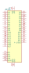
28F400 | Description: PA28F400BX-T/B Flash EEProm 4-MBIT (256Kx16bits, 512Kx8bits) 5V, 12V Prog
Keys: EEPROM FLASH 4MO
Datasheet: http://download.intel.com/design/archives/flash/docs/29045101.pdf |
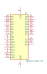
29F010-TSOP-SP | Description: Flash EEProm 128Ko (TSOP 32 pack.) 5V prog
Keys: EEPROM FLASH 128KO
Datasheet: None |
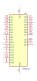
29W040 | Description: Flash EEProm 512PP (TSOP 32) 3,3V
Keys: EEPROM FLASH 512KO
Datasheet: None |
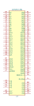
AM29PDL128G | Description: 128 Megabit (8 M x 16-Bit/4 M x 32-Bit), Simultaneous Operation Flash Memory with VersatileIO Control
Keys: None
Datasheet: None |
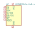
AT25DF041x-UxN-x | Description: 4-Mbit, 1.65V Minimum SPI Serial Flash Memory with Dual-I/O, WLCSP-8
Keys: SPI DSPI 4Mbit 1.65V
Datasheet: http://www.adestotech.com/wp-content/uploads/DS-AT25DF041B_040.pdf |
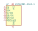
AT25SF081-SSHD-X | Description: 8-Mbit, 2.5V Minimum SPI Serial Flash Memory with Dual-I/O and Quad-I/O Support, SOIC-8
Keys: SPI DSPI QSPI 8Mbit 2.5V
Datasheet: https://www.adestotech.com/wp-content/uploads/DS-AT25SF081_045.pdf |
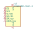
AT25SF081-SSHF-X | Description: 8-Mbit, 2.3V Minimum SPI Serial Flash Memory with Dual-I/O and Quad-I/O Support, SOIC-8
Keys: SPI DSPI QSPI 8Mbit 2.3V
Datasheet: https://www.adestotech.com/wp-content/uploads/DS-AT25SF081_045.pdf |
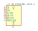
AT25SF081-XMHD-X | Description: 8-Mbit, 2.5V Minimum SPI Serial Flash Memory with Dual-I/O and Quad-I/O Support, TSSOP-8
Keys: SPI DSPI QSPI 8Mbit 2.5V
Datasheet: https://www.adestotech.com/wp-content/uploads/DS-AT25SF081_045.pdf |
AT25SF081-XMHF-X | Description: 8-Mbit, 2.3V Minimum SPI Serial Flash Memory with Dual-I/O and Quad-I/O Support, TSSOP-8
Keys: SPI DSPI QSPI 8Mbit 2.3V
Datasheet: https://www.adestotech.com/wp-content/uploads/DS-AT25SF081_045.pdf |
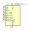
AT25SL321-U | Description: 32-Mbit, 1.7V 2.5V Minimum SPI Serial Flash Memory with Dual-I/O and Quad-I/O Support, WLCSP-8
Keys: SPI DSPI QSPI 32Mbit 1.7V
Datasheet: https://www.adestotech.com/wp-content/uploads/AT25SL321_112.pdf |
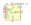
AT45DB161-JC | Description: 16Mb Serial DataFlash, 2.7V Vcc, PLCC-32
Keys: Atmel DataFlash
Datasheet: http://ww1.microchip.com/downloads/en/devicedoc/doc0807.pdf |
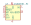
AT45DB161-RC | Description: 16Mb Serial DataFlash, 2.7V Vcc, SOIC-28
Keys: Atmel DataFlash
Datasheet: http://ww1.microchip.com/downloads/en/devicedoc/doc0807.pdf |
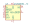
AT45DB161-TC | Description: 16Mb Serial DataFlash, 2.7V Vcc, TSOP-28
Keys: Atmel DataFlash
Datasheet: http://ww1.microchip.com/downloads/en/devicedoc/doc0807.pdf |
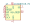
AT45DB161B-RC | Description: 16Mb Serial DataFlash, 2.7V Vcc, SOIC-28
Keys: Atmel DataFlash
Datasheet: http://ww1.microchip.com/downloads/en/devicedoc/doc2224.pdf |
AT45DB161B-RC-2.5 | Description: 16Mb Serial DataFlash, 2.5V Vcc, SOIC-28
Keys: Atmel DataFlash
Datasheet: http://ww1.microchip.com/downloads/en/devicedoc/doc2224.pdf |
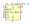
AT45DB161B-TC | Description: 16Mb Serial DataFlash, 2.7V Vcc, TSOP-28
Keys: Atmel DataFlash
Datasheet: http://ww1.microchip.com/downloads/en/devicedoc/doc2224.pdf |
AT45DB161B-TC-2.5 | Description: 16Mb Serial DataFlash, 2.5V Vcc, TSOP-28
Keys: Atmel DataFlash
Datasheet: http://ww1.microchip.com/downloads/en/devicedoc/doc2224.pdf |
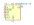
AT45DB161D-SU | Description: 16Mb Serial DataFlash, 2.5V Vcc, SOIC-8
Keys: Adesto Flash Memory DataFlash
Datasheet: https://www.adestotech.com/wp-content/uploads/doc3500.pdf |
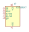
GD25D05CT | Description: 512kbit, 3.0V Standard and Dual Serial Flash, SOP-8
Keys: SPI DSPI QSPI 512Kbit 3.0V
Datasheet: http://www.elm-tech.com/en/products/spi-flash-memory/gd25d10/gd25d10.pdf |
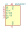
GD25D10CT | Description: 1Mbit, 3.0V Standard and Dual Serial Flash, SOP-8
Keys: SPI DSPI QSPI 1Mbit 3.0V
Datasheet: http://www.elm-tech.com/en/products/spi-flash-memory/gd25d10/gd25d10.pdf |
IS25WP256D-xM | Description: 256-Mbit, 1.8V SPI Serial Flash Memory with Dual-I/O and Quad-I/O Support, SOIC-16
Keys: SPI DSPI QSPI NOR 256Mbit 1.8V
Datasheet: http://www.issi.com/WW/pdf/IS25LP(WP)256D.pdf |
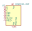
M25PX32-VMP | Description: 32Mb, Dual I/O, 4KB Subsector Erase, 3V Serial Flash Memory with 75 MHz SPI Bus Interface, DFN-8
Keys: NOR Serial Flash Embedded Memory
Datasheet: https://www.micron.com/~/media/documents/products/data-sheet/nor-flash/serial-nor/m25px/m25px32.pdf |
M25PX32-VMW | Description: 32Mb, Dual I/O, 4KB Subsector Erase, 3V Serial Flash Memory with 75 MHz SPI Bus Interface, SOIC-8W
Keys: NOR Serial Flash Embedded Memory
Datasheet: https://www.micron.com/~/media/documents/products/data-sheet/nor-flash/serial-nor/m25px/m25px32.pdf |
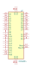
M29W004 | Description: Flash EEProm 512Ko (TSOP 40 pack.) 3,3V
Keys: EEPROM FLASH 512KO
Datasheet: None |
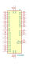
M29W008 | Description: Flash EEProm 1MO (TSOP 40 pack.) 3,3V
Keys: EEPROM FLASH 1MO
Datasheet: None |
MX25R3235FM1xx0 | Description: 32-Mbit, Wide Range Voltage SPI Serial Flash Memory, SOP-8
Keys: SPI 32Mbit 1.65V-3.6V
Datasheet: http://www.macronix.com/Lists/Datasheet/Attachments/7534/MX25R3235F,%20Wide%20Range,%2032Mb,%20v1.6.pdf |
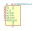
MX25R3235FM1xx1 | Description: 32-Mbit, Wide Range Voltage SPI Serial Flash Memory, SOP-8
Keys: SPI 32Mbit 1.65V-3.6V
Datasheet: http://www.macronix.com/Lists/Datasheet/Attachments/7534/MX25R3235F,%20Wide%20Range,%2032Mb,%20v1.6.pdf |
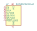
MX25R3235FM2xx0 | Description: 32-Mbit, Wide Range Voltage SPI Serial Flash Memory, SOP-8
Keys: SPI 32Mbit 1.65V-3.6V
Datasheet: http://www.macronix.com/Lists/Datasheet/Attachments/7534/MX25R3235F,%20Wide%20Range,%2032Mb,%20v1.6.pdf |
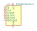
MX25R3235FM2xx1 | Description: 32-Mbit, Wide Range Voltage SPI Serial Flash Memory, SOP-8
Keys: SPI 32Mbit 1.65V-3.6V
Datasheet: http://www.macronix.com/Lists/Datasheet/Attachments/7534/MX25R3235F,%20Wide%20Range,%2032Mb,%20v1.6.pdf |
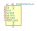
MX25R3235FZNxx0 | Description: 32-Mbit, Wide Range Voltage SPI Serial Flash Memory, WSON-8
Keys: SPI 32Mbit 1.65V-3.6V
Datasheet: http://www.macronix.com/Lists/Datasheet/Attachments/7534/MX25R3235F,%20Wide%20Range,%2032Mb,%20v1.6.pdf |
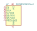
MX25R3235FZNxx1 | Description: 32-Mbit, Wide Range Voltage SPI Serial Flash Memory, WSON-8
Keys: SPI 32Mbit 1.65V-3.6V
Datasheet: http://www.macronix.com/Lists/Datasheet/Attachments/7534/MX25R3235F,%20Wide%20Range,%2032Mb,%20v1.6.pdf |
SST25VF080B-50-4x-S2Ax | Description: 8-Mbit, 2.7 to 3.6V, SPI Flash Memory, SOIC-8
Keys: flash memory spi
Datasheet: http://ww1.microchip.com/downloads/en/DeviceDoc/20005045C.pdf |
SST39SF010 | Description: Silicon Storage Technology (SSF) 128k x 8 Flash ROM
Keys: 128k flash rom
Datasheet: http://ww1.microchip.com/downloads/en/DeviceDoc/25022B.pdf |
SST39SF020 | Description: Silicon Storage Technology (SSF) 256k x 8 Flash ROM
Keys: 256k flash rom
Datasheet: http://ww1.microchip.com/downloads/en/DeviceDoc/25022B.pdf |
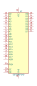
SST39SF040 | Description: Silicon Storage Technology (SSF) 512k x 8 Flash ROM
Keys: 512k flash rom
Datasheet: http://ww1.microchip.com/downloads/en/DeviceDoc/25022B.pdf |
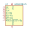
W25Q128JVS | Description: 128Mb Serial Flash Memory, Standard/Dual/Quad SPI, SOIC-8
Keys: flash memory SPI QPI DTR
Datasheet: http://www.winbond.com/resource-files/w25q128jv_dtr%20revc%2003272018%20plus.pdf |
W25Q32JVSS | Description: 32Mb Serial Flash Memory, Standard/Dual/Quad SPI, SOIC-8
Keys: flash memory SPI
Datasheet: http://www.winbond.com/resource-files/w25q32jv%20revg%2003272018%20plus.pdf |
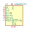
W25Q32JVZP | Description: 32Mb Serial Flash Memory, Standard/Dual/Quad SPI, DFN-8
Keys: flash memory SPI
Datasheet: http://www.winbond.com/resource-files/w25q32jv%20revg%2003272018%20plus.pdf |